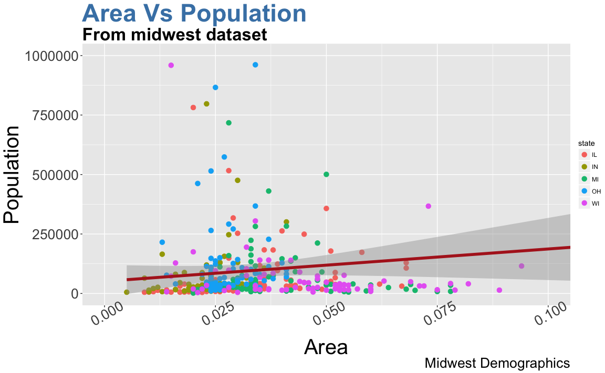

Ggplot2 Tutorial - Part 1
Previously we saw a brief tutorial of making charts with ggplot2 package. It quickly touched upon the various aspects of making ggplot. In this and the following two parts, I discuss the individual steps and nuances required for constructing effective and visually appealing ggplots. So, for practical purposes I hope this tutorial serves well as a bookmark reference that will be useful for your day-to-day plotmaking.
This is part 1 of a three part tutorial on ggplot2, an aesthetically pleasing (and very popular) graphics framework in R. This tutorial is primarily geared towards those having a some basic knowledge of the R programming language and want to make complex and nice looking charts with R ggplot.
Part 1: Introduction to Ggplot, covers the basic knowledge about constructing simple ggplots and modifying the components and aesthetics.
Part 2: Advanced customizations, is about more advanced customizations like manipulating legend, annotations, multiplots with faceting and custom layouts
Part 3: Other types of Ggplot geoms, applies what was learnt in part 1 and 2 to construct other types of ggplots such as barcharts, boxplots etc.
Part 1: Introduction to Ggplot
- Understanding the ggplot syntax
- Making a simple scatter plot
- Adjusting the X and Y axis limits
- Changing the title and axis labels
- Changing the color and size of points, title and axis labels and axis text
1. Understanding the ggplot syntax
The syntax for constructing ggplots could be puzzling if you are a beginner or work primarily with base graphics. The main difference is that, unlike base graphics, ggplot works with dataframes and not individual vectors. All the data needed to make the plot should be contained within the dataframe supplied to the ggplot() itself.
The second noticeable feature is that you can keep enhancing the plot by adding more layers (and themes) to an existing plot created using the ggplot() function.
Let’s initialize a basic ggplot based on the midwest dataset.
## Setup
options(scipen=999) # turn off scientific notation like 1e+06
library(ggplot2)
data("midwest", package = "ggplot2") # load the data
# midwest <- read.csv("http://goo.gl/G1K41K") # alt source
## Init Ggplot
ggplot(midwest, aes(x=area, y=poptotal)) # area and poptotal are columns in 'midwest'
A blank ggplot is drawn. Even though the x and y are specified, there are no points or lines in it. This is because, ggplot doesn’t assume that you meant a scatterplot or a line chart to be drawn. I have only told ggplot what dataset to use and what columns should be used for X and Y axis. I haven’t explicitly asked it to draw any points.
Also note that aes() function is used to specify the X and Y axes. That’s because, any information that is part of the dataframe has to be specified inside the aes() function.
2. Making a simple scatter plot
Let’s make a scatterplot on top of the blank ggplot by adding points using a geom layer called geom_point.
ggplot(midwest, aes(x=area, y=poptotal)) + geom_point()
We got a basic scatterplot, but it lacks some basic components such as the plot title, meaningful axis labels etc. Moreover most of the points are concentrated on the bottom portion of the plot, which is not so nice. You will see how to rectify these in upcoming steps.
Like geom_point(), there are many such geom layers which we will see in a subsequent part in this tutorial series. For now, let’s just add a smoothing layer using geom_smooth(method='lm'). Since the method is set as lm (short for linear model), it draws the line of best fit.
g <- ggplot(midwest, aes(x=area, y=poptotal)) + geom_point() + geom_smooth(method="lm")
plot(g)
The line of best fit is in blue. Can you find out what other method options are available for geom_smooth? (note: see ?geom_smooth). You might have noticed that majority of points lie in the bottom of the chart which doesn’t really look nice. So, let’s change the Y-axis limits to focus on the lower half.
3. Adjusting the X and Y axis limits
The axis limits can be controlled in 2 ways. One by deleting the points outside the range. This will change the lines of best fit or smoothing lines as compared to the original data.
This can be done by xlim() and ylim(). You can pass a numeric vector of length 2 (with maximum and minimum values) or just the maximum and minimum values itself
# Delete the points
g + xlim(c(0, 0.1)) + ylim(c(0, 1000000)) # deletes points
# g + xlim(0, 0.1) + ylim(0, 1000000) # deletes points In this case, I did not build the chart from scratch. That is because, the previous plot was stored as
In this case, I did not build the chart from scratch. That is because, the previous plot was stored as g, a ggplot object, which when called will reproduce the same plot. Using ggplot, you can add more layers and themes on top of this plot.
Did you notice that the line of best fit became more horizontal compared to the original plot? This is because, when using xlim() and ylim(), the points outside the specified range are deleted and will not be considered while drawing the line of best fit (using geom_smooth(method='lm')). This would come in handy when you would like to know how the line of best fit would change when some extreme values (or outliers) are removed.
The other method to change the X and Y axis limits is to zoom in to the region of interest without deleting the point. This is done using coord_cartesian(). Let’s store this plot as g1.
# Zoom in
g1 <- g + coord_cartesian(xlim=c(0,0.1), ylim=c(0, 1000000)) # zooms in
plot(g1)
As a result, the lines of best fit did not change.
4. Changing the title and axis labels
I have stored this as g1. Let’s add the plot title and labels for X and Y axis. This can be done in one go using the labs function with title, x and y arguments. Another option is to use the ggtitle(), xlab() and ylab().
g1 + labs(title="Area Vs Population", subtitle="From midwest dataset", y="Population", x="Area", caption="Midwest Demographics")
# or
g1 + ggtitle("Area Vs Population", subtitle="From midwest dataset") + xlab("Area") + ylab("Population")
Excellent! So here is the full function call.
ggplot(midwest, aes(x=area, y=poptotal)) +
geom_point() +
geom_smooth(method="lm") +
coord_cartesian(xlim=c(0,0.1), ylim=c(0, 1000000)) +
labs(title="Area Vs Population", subtitle="From midwest dataset", y="Population", x="Area", caption="Midwest Demographics")5. Changing the color and size of points, title and axis labels and text
We can change the aesthetics of a geom layer by modifying the respective geoms. Let’s change the color of the points and the line.
ggplot(midwest, aes(x=area, y=poptotal)) +
geom_point(col="steelblue", size=3) +
geom_smooth(method="lm", col="firebrick") +
coord_cartesian(xlim=c(0, 0.1), ylim=c(0, 1000000)) +
labs(title="Area Vs Population", subtitle="From midwest dataset", y="Population", x="Area", caption="Midwest Demographics")
Suppose if we want the color to change based on another column in the source dataset (midwest), it must be specified inside the aes() function.
gg <- ggplot(midwest, aes(x=area, y=poptotal)) +
geom_point(aes(col=state), size=3) +
geom_smooth(method="lm", col="firebrick", size=2) +
coord_cartesian(xlim=c(0, 0.1), ylim=c(0, 1000000)) +
labs(title="Area Vs Population", subtitle="From midwest dataset", y="Population", x="Area", caption="Midwest Demographics")
plot(gg)
As a benefit, the legend is added automatically. It can be removed by changing the legend position in theme function.
gg + theme(legend.position="None")Also, You can change the color palette entirely.
gg + scale_colour_brewer(palette = "Set1")
More of such palettes can be found in the RColorBrewer package
library(RColorBrewer)
head(brewer.pal.info, 10) # show 10 palettes
#> maxcolors category colorblind
#> BrBG 11 div TRUE
#> PiYG 11 div TRUE
#> PRGn 11 div TRUE
#> PuOr 11 div TRUE
#> RdBu 11 div TRUE
#> RdGy 11 div FALSE
#> RdYlBu 11 div TRUE
#> RdYlGn 11 div FALSE
#> Spectral 11 div FALSE
#> Accent 8 qual FALSE
Alright, Now let’s see how to change the X and Y axis text. This involves two aspects.
- You need to specify at what intervals the axis ticks should appear. This can be done by setting the
breaksoption inscale_x_continuous().
The breaks should be of the same scale as the X axis variable. Note that I am using scale_x_continuous because, the X axis variable is a continuous variable. Had it been a date variable, scale_x_date could be used. Like scale_x_continuous() an equivalent scale_y_continuous() is available for Y axis.
gg + scale_x_continuous(breaks=seq(0, 0.1, 0.01))
- You can optionally change the
labelsat the axis ticks.labelstake a vector of the same length asbreaks.
Let me demonstrate by setting the labels to alphabets from a to k (though there is no meaning to it in this context).
gg + scale_x_continuous(breaks=seq(0, 0.1, 0.01), labels = letters[1:11])
If you need to reverse the scale, use scale_x_reverse().
gg + scale_x_reverse()
You can also format it as percentage and set the breaks for Y axis text as well.
gg + scale_x_continuous(breaks=seq(0, 0.1, 0.01), labels = sprintf("%1.2f%%", seq(0, 0.1, 0.01))) + scale_y_continuous(breaks=seq(0, 1000000, 200000))
The aesthetics of components such as plot and axis titles and the axis text can also be customised. Since they are part of the plot’s theme, it has to be passed to the theme() function and the values need to be set using the element_text() function. Below, I have changed the size, color, face and lineheight. The axis text can be tilted by changing the angle. It is not possible to cover all the aesthetics, but you can check ?theme for the full list.
gg1 <- gg + theme(plot.title=element_text(size=35, face="bold", color="steelblue", lineheight=1.2), # title
plot.subtitle=element_text(size=25, face="bold"), # subtitle
plot.caption=element_text(size=20), # caption
axis.title.x=element_text(size=30), axis.title.y=element_text(size=30), # axis title
axis.text.x=element_text(size=20, angle = 30), axis.text.y=element_text(size=20)) # axis text
plot(gg1)
Finally, instead of changing this separately, we can change the entire theme. The help page ?theme_bw shows all the available built-in themes.
gg1 + theme_bw()
gg1 + theme_classic()

For more customised and fancy themes have a look at the ggthemes package and the ggthemr package.
That’s it for now. In ggplot tutorial part-2, I will discuss manipulating legend, annotations, faceting and custom layouts.
Have a suggestion or found a bug? Notify here.
Editors Note: The mastering R programming video course has a dedicated section for ggplot2 where the concepts are demonstrated in detail. Additionally it includes solving real coding challenges at the end of every video lesson.